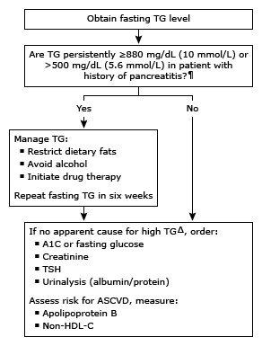

TG: triglycerides; A1C: hemoglobin A1C; TSH: thyroid-stimulating hormone; ASCVD: atherosclerotic cardiovascular disease; non-HDL-C: non-high-density lipoprotein cholesterol.
* A normal TG level is <150 mg/dL (1.7 mmol/L). Interpretation of a specific abnormal test result should be based upon the reference range reported with that result.
¶ The risk of pancreatitis increases progressively with TG levels over 500 mg/dL (5.6 mmol/L), with marked increase in risk in patients with prior, recent acute pancreatitis.
Δ History and examination may identify obesity, excess alcohol, and pregnancy. When cause is not apparent, an attempt should be made to identify a secondary cause. Common secondary causes include diabetes, hypothyroidism, nephrotic syndrome, and certain drugs.